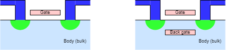

First ICs had one layer of metal interconnect.
Current chips may have 10+ metal layers … but the logic is still, basically, 2D on the silicon surface.
There are arguable exceptions e.g. DRAM ‘trench’
capacitor:
Two DRAM cells (cross section)
Making a truly 3D chip is a really serious challenge – not least in terms of power density.
Making a stack of 2D chips is easier, and still:
Problem
A term you may come across. Silicon is a semiconductor (you knew that) and the electrons (or holes) can move through the crystal lattice with a certain mobility. Like any crystal structure it has a characteristic atomic spacing.
Straining the silicon involves distorting the lattice distances, which can improve the carrier mobility and thus the transconductance. In short, it makes a transistor of a given size ‘faster’.
Straining may be achieved by overlaying the Si on a SeGe substrate (which has a different spacing). More recently, doping the source and drain of PMOS transistors has been used to compress the channel between then (refer to a cross-section of a MOSFET). To stretch the channel on NMOS FETs a silicon nitride (N4Si3) gate overlay is used.
The parasitic capacitance of the ‘bulk’ silicon acts to slow down switching. This can be reduced by insulating the active silicon — various approaches may be used — a process referred to as Silicon On Insulator (SOI). This can also help with radiation hardening which is important in some applications, such as spacecraft.
The ‘traditional’ on-chip wiring has been aluminium which is a good electrical conductor and is easy to etch. More recently this has been (largely?) superseded by copper which is a better conductor; the conductance of wires is increasingly important as the wires become ever thinner. Copper is not as easy to work as aluminium; instead of deposit/plasma etch the chip's surface (at that stage) has a SiO2 insulating layer which is patterned with etched trenches. Copper is deposited over all and then mechanically polished away, leaving only the deposits in the protected trenches as the wires. The process is repeated for higher layers.
The threshold voltage is affected by the bulk silicon or ‘body’ voltage. It is possible to bias the body to affect the switching characteristics of the transistor. This is known as the ‘body effect’.

Explicit ‘back gates’ have also been proposed:
these could be switched together with the ‘front’ gate or,
perhaps more easily, used to bias the channel and alter the
transistor's threshold.
Rather than have a planar transistor it is possible to ‘surround’ the channel with the gate. This is considerably more complex to manufacture but gives better electric field density in the channel, and hence more control.
The results are higher switching speed and lower subthreshold leakage.
Although there was a specific original meaning, such devices –
which come in a variety of configurations – tend to all be known
as ‘FinFETs’.
These, and similar, structures are of great interest both for fast
switching and for leakage reduction.
Figure from Wikipedia.
This
video – [2023] (15 mins.) – may be of interest.
So might this
one – [2024] (16 mins.) – which is a bit newer.
FinFETs and similar were mentioned in an earlier session. It is likely that physical structures which improve transistors' switching characteristics will continue to be developed. The objective is to conduct better when ‘on’ yet avoid leakage when ‘off’. See, for example, Intel's ‘Tri-gate’ transistors.
It is also likely that processes will allow more variety of different doping levels (‘speeds’) within the same chip.
As SoC feature sizes decrease, transistor gate lengths
decrease. At the same time the operating voltage must decrease to
avoid breakdown of the materials. This leads to transistors becoming
increasingly ‘leaky’ when ‘off’ with
deleterious effects on power wastage.
To increase the change in channel conductivity when switching
the electric field can be concentrated by adding more
gate surface(s).
Foundries are developing transistor structures on top of – and in some cases embedded in – the substrate.
‘FinFETs’ are one such structure although the term is used
informally for other designs.
Another example is Intel's tri-gate transistor which features
multiple parallel channels with ‘wrap-around’ gates.
Generically this can reach the (imaginatively named) Gate-All-Around
(GAA) where the channels are completely wrapped by the gate. (In this
last form the channels ‘nanowires’ may even be
vertically stacked.)
The various ‘rules’ pertaining to transistor widths still apply, but not now to a linear scaling: instead the number of ‘fins’ can be varied.
Very low power applications may have to work for years – possibly the lifetime of the device – of a small button cell. Alternatively they may need to run be energy harvesting from the environment (for example picking up energy from vibrations).
These applications are often (very) low-performance so the dominant energy dissipation mode may be static leakage.
A long-established low-power application is the wrist watch. A contemporary example is the new (remotely read) gas meters where a single cell has to sustain 10+ years of operation.
The design philosophy of this type of device is somewhat different from the typical, drive-for-more-performance- computing devices, but equally valid.
(For scale, a bond wire will be ~100 μm diameter: possibly thinner although thicker for power.)
TSVs with spacing as small as 10 μm have been demonstrated;
initially, practicality may increase this distance for production.
For contrast, pad spacing for bond wires is limited to around 200 μm.
Allows interfacing such as ‘Wide I/O’ to provide greater off-chip bandwidth:
whilst occupying a smaller physical volume by chip stacking.
An obvious application is to increase the amount of RAM (i.e. SDRAM) in a small space with limited interconnect capacitance. A ‘classic’ example is the Hybrid Memory Cube (HMC) which stacked multiple DRAM dice. This has not (yet) been an unmitigated commercial success although it serves to illustrate an opportunity. A similar (rival) technology is High Bandwidth Memory (HBM).
Another attractive proposition for chip stacking is integrating sensors with the processing logic. Using different dice allows easier (cheaper) access to different manufacturing steps whilst stacking reduces the size and power consumption of the final device. This is attractive for devices such as image sensors.
Between a PCB layer and a direct chip stack, interposers can form an intermediate commection medium. There may be organic of silicon substrates, perhaps using ‘flip-chip’ mounting. They provide similar (if lesser) benefits and drawbacks as chip stacking — although the two may be combined.
True, monolithic three-dimensional integrated circuits, where there are multiple layers of transistors on the same chip are still under investigation but not (yet) feasible for commercial production.
A brief (1 min.) video [2021] with shinier graphics than we can do.
Moore's Law is now reaching its limits. Really!
For many years the
International
Technology Roadmap for Semiconductors (ITRS) described plans,
expectations amd aspirations for the future development of the
technololgy. This is now superseded by the
International
Roadmap for Devices and Systems (IRDS). For future news, watch
that space.
Up to roadmap index.
Back to Variability.
Out to contents.